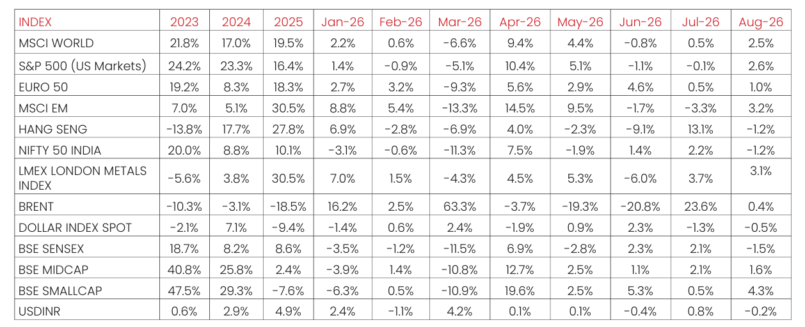

Macro and
Equity Market
Outlook
Equity Market
Outlook
GLOBAL MACRO & MARKETS
India’s NSE NIFTY 50 Index ended the month of August 2026 in red (-1.2%).
Among major global indices, the Japanese NIKKEI (+3.0%), Morgan Stanley
Capital International (MSCI) World (+2.5%), the Euro 50 (+1.0%) and the
S&P 500 (+2.6%) ended the month of August 2026 with positive returns.
Performance was mixed among Emerging Market (EM) indices in August
2026, with the MSCI EM, Hang Seng, BOVESPA Brazil recording returns of
(+3.2%), (-1.2%), and (-0.3%) respectively.
The London Metals Exchange (LME) Metals Index gained (+3.1%) in August
2026. West Texas Intermediate (WTI) in green MoM, by (+1.3%) and Brent
Crude marginally positive MoM, by (0.4%), respectively, as markets
remained cautious given geopolitical uncertainty.
The Dollar Index dropped by (-0.5%), through August 2026, with the US
Dollar (USD) is neutral vis-à-vis Emerging Market (EM) currencies (-0.5%)
and depreciating marginally against the Indian Rupee (INR) on the spot
market (-0.2%). Bond yields moved unevenly, with India’s 10Y G-Sec yields
gained by 10.7 bps, while US 10Y G-Sec yields climbing 1.53 bps, and the
German Bund yield rose by 11.8 bps, with rates settling at 6.945%, 4.75%
and 3.324%, respectively.
Domestic Macro & Markets
The BSE SENSEX decreased (-1.5%) in August 2026, in line with the NSE
NIFTY Index. The BSE Mid-cap index & the BSE Small-Cap index, rising by
(+1.6%) & (+4.3%), over the month of August 2026, respectively.
Sector-wise, Capital goods, Retail and Banks were the outperformers over
the month of August 2026, clocking (+3.0%), (+2.0%) and (+1.0%)
respectively. BSE Sensex’s major sectoral indices posted mixed
performance in August 2026.

Net Foreign Institutional Investors (FII) flows into equities were positive for
August 2026 at ($ 2.963 Bn), following ($2.245 Bn) in July 2026. Domestic
Institutional Investors (DIIs) remained net buyers of Indian equities for the
37th consecutive month with flows of (+$6.1) Bn in August 2026 compared
to (+3.659Bn) in July 2026.
India's high frequency data update:
Purchasing Manager’s Index Manufacturing PMI eased to its lowest level since
August 2021, GST collections remained robust driven by a sharp rise in import
revenue, core sector and industrial output rebounded, credit growth
accelerated marginally, while inflation edged higher and the overall trade
deficit widened.
Purchasing Managers’ Index Manufacturing PMI:
India’s Manufacturing PMI for August 2026 eased to 52.8, down from 53.5 in
July, marking the weakest improvement in the growth since August 2021.
Output and new orders continued to expand, but both grew at their slowest
rates since August 2021 amid softer demand and challenging market
conditions. Export orders also increased, although growth in international
sales eased from July.
Goods and Services Tax (GST) Collection:
Gross collections of INR 1.99 Tn (+14.8% YoY) in August 2026 the Gross
Domestic Revenue stood at Rs 1.37 lakh crore, rose (+9.3% YoY), while
Gross Import Revenue stood at Rs 0.626 lakh crore, marking a sharp rise of
(+29.0% YoY) during the month.
Core Sector Production:
The index of eight core sector industries grew moderately (+5.4% YoY) in
July 2026, against a (+6.0% YoY) growth in June 2026. The production of
Electricity, Cement and Steel recorded growth in June 2026. The
production of Iron ore, Cement and Electricity recorded growth in July
2026 by (+29.5% YoY), (+13.1% YoY) and (+9.0% YoY) respectively.
Industrial Production:
Factory output growth as measured by the Index of Industrial Production
(IIP) grew YoY by (+6.7%) in July 2026, vs a growth of (+8.7%) YoY in June
2026. The growth rates of the Four sectors, Mining & Quarrying,
Manufacturing, Electricity & Gas Supply and Water Supply, Sewerage &
Waste Management for the month of July 2026 are (-0.9%), (+7.3%),
(+8.7%) and (+7.4%) YoY respectively.
Credit growth:
Scheduled Commercial Bank Credit growth in August 2026 increased
marginally to (+18.3 %) YoY vs (+17.7%) YoY in July 2026. Agriculture and
allied activities credit in July 2026 grew by (+17.0%) YoY, while industrial
sector credit grew by (+20.0%) YoY, the services sector credit grew by
(+22.9%) YoY.
Inflation:
For July 2026, the Consumer Price Index (CPI) inflation rate rose YoY to
(+4.45%), up from (+4.38%) in June 2026. Food inflation accelerated
further to (+5.52%) YoY, compared to (+5.52%) in June. The Wholesale
Price Index (WPI) inflation in July 2026 was at around (+9.8%) YoY
compared to (+9.9%) YoY in June 2026. The positive rate of inflation in
June 2026 was primarily due to increases in prices of mineral oils, crude
petroleum & natural gas, basic metals, jewellery, vegetables, and housing
costs, while deflationary trends were observed in items like potatoes, peas,
and motor vehicles.
Trade Deficit:
Indian Merchandise Exports rose by (+19.6%) YoY to $44.2 Bn in July 2026.
Imports rose by (+17.5%) YoY to $76.2 Bn. India’s trade deficit widened to
$31.98 billion in July 2026, up from $27.5 billion in the same month of the
previous year.
Events to watch out for in September 2026
RBI Policy & Liquidity Watch (September Ongoing):
The RBI will
continue monitoring liquidity conditions after keeping the repo rate
unchanged at 5.25% in August. With crude oil prices hovering near $94/bbl
and global yields above 5%, bond markets will remain sensitive to RBI’s
liquidity absorption operations. Any commentary from RBI officials during
September will be closely tracked for signals ahead of the October MPC.
BRICS Summit (September 12–13):
India hosts the BRICS Summit at
Bharat Mandapam, New Delhi. Leaders from 11 member nations, including
China, Russia, Brazil, Saudi Arabia, and UAE, will attend. The summit’s
theme is “Building for Resilience, Innovation, Cooperation and
Sustainability.” Key announcements on trade, energy cooperation, and
geopolitical positioning may influence India’s external sector outlook.
Global Cues:
US FOMC Meeting (Sept 16):
Markets await clarity on rate hikes amid
sticky US inflation.
Crude Oil:
Brent remains elevated (~$94/bbl) due to
Iran sanctions.
Tech & FII Flows:
Nvidia’s guidance and US bond yields
above 5% may influence IT sector sentiment and foreign inflows.
Domestic Macro & Compliance:
Belated ITR filing continues for taxpayers
missing the July 31 deadline, with late fees applicable. Macro data releases
(CPI, WPI, IIP) expected mid-month will provide cues on inflation trajectory
and industrial output.
Monthly Performance for Key Indices:

Source:NIMF Research, Bloomberg, RBI
Note: Market scenarios are not reliable indicators for current or future performance. The same should not be construed as investment advice or as any research report/research recommendation.
Past performance may or may not be sustained in future.
Note: Market scenarios are not reliable indicators for current or future performance. The same should not be construed as investment advice or as any research report/research recommendation.
Past performance may or may not be sustained in future.
Market View
Earnings recovery seems gaining potential momentum, with Q1 results
reflecting improved revenue growth on the back of a low base from last year.
Demand indicators are improving across key sectors. Auto volumes,
consumer staples demand, and credit growth trends in banks have all shown
signs of recovery, pointing to a broad-based improvement in economic
activity.
Policy support may be beginning to yield results. Last year's GST and income
tax reductions appear to be supporting consumption and business activity,
helping strengthen growth momentum potential.
The upcoming festive season may be a key monitorable. A continuation of
current demand trends could further improve confidence in earnings
growth, an element that has been lacking over the last 6-8 quarters amid
tariff uncertainties, elevated energy costs, and global disruptions.
Valuations have become more reasonable. After nearly two years of largely
range-bound market performance, markets appear to be favourably priced
from a long term point of view.
India's external position has strengthened, with ~ USD 136 billion raised
through foreign currency bond issuances. This may help moderate currency
depreciation pressures and support a more stable environment for foreign
capital flows.
Foreign investor positioning offers room for improvement. Foreign
ownership in Indian equities has dropped below 17%, creating scope for
potential inflows if earnings visibility continues to improve.
Domestic flows remain resilient, while recent improvement in FII
participation might be an encouraging sign. Foreign demand is gradually
absorbing the strong supply of equity issuance.
Key risks remain, including the prolonged Middle East crisis, high bond yields
and continued equity supply from large IPOs and OFS transactions.
Overall, improving earnings, supportive policy measures, attractive
valuations, stable domestic flows, may provide a favourable backdrop for
medium-to long term investors.
Asset allocation in line with the risk appetite of the investor is an important
tool to navigate any unanticipated volatility. Accordingly Large Cap & Large
Cap oriented diversified strategies along with hybrid funds might appear to
be better placed on risk-reward basis, while Mid/Small cap allocation may be
considered in a staggered manner through systematic investment with a
long-term view.
Gold & Silver Outlook
Precious metals continue to navigate changing expectations around monetary policy, real yields and the US dollar.
While these remain important near-term influences, recent developments suggest that the structural role of gold in
portfolios continues to broaden beyond the traditional rates-and-dollar framework.
A notable development has been the return of institutional investment demand. It has been recently reported that
large global asset managers had either rebuilt gold positions following the correction or maintained their existing
allocations. The common thread was less about short-term price direction and more about gold's usefulness as a
liquid portfolio hedge and diversifier amid macroeconomic, fiscal and geopolitical uncertainty.
This has coincided with renewed flows into gold ETFs after several months of redemptions. ETF participation may
particularly be relevant in precious metals because investment flows may reinforce existing market trends, while
providing an additional source of demand alongside physical consumers and the official sector.
Central-bank demand remains another important structural pillar. Official-sector purchases strengthened again in
the second quarter, with World Gold Council data showing net purchases of 289 tonnes — the highest recorded for
a second quarter of CY 2026. Reserve diversification, geopolitical fragmentation and concerns around fiscal
sustainability might continue to encourage a gradual reassessment of gold's role within global reserves.
In the past, high real yields^ would have been a negative for gold. However, sustained central-bank and physical
demand have helped reduce this sensitivity during the current cycle. Similarly, gold's recent correlation with equities
has moderated, reinforcing the relevance of its diversification characteristics within multi-asset portfolios.

The US dollar and real yields^ may remain the principal near-term counterweights. A sustained
appreciation in the dollar or materially higher real rates could periodically weigh on potential
investment demand. However, concerns around fiscal credibility, reserve diversification and
the durability of the dollar's store-of-value characteristics have increasingly entered the
institutional asset-allocation debate. Even without any change in the dollar's dominant
reserve-currency status, relatively modest diversification at the margin can be meaningful for
the gold market.
Silver continues to share many of gold's monetary and investment drivers while retaining a significant industrial
component. ETF flows and gold-market direction remain important, but manufacturing activity, solar demand,
electrification, recycling and technological substitution introduce additional cyclical influences and contribute to
higher volatility. Economic activity in China and USA may have an impact on industrial commodities. A strong US
economy potentially supports silver demand, while China's weak economy may weigh on it. The two economies
relatively offset each other, making the overall impact on silver prices broadly neutral. . Any material changes in
these two economies may have a material impact on industrial metals, including silver.
Overall, near-term volatility in precious metals might be expected as markets respond to monetary policy and
currency and bond movements. At the same time, central-bank diversification, renewed institutional participation,
ETF demand and gold's evolving role as a portfolio hedge potentially suggest that the longer-term structural case
may continue to warrant investor attention.
Note: Market scenarios are not reliable indicators for current or future performance. The same should not be construed
as investment advice or as any research report/research recommendation.
Data Source: World Gold Council, Bloomberg,^"Real Yield"="Nominal Yield"-"Expected Inflation Rate"
Past performance may or may not be sustained in future.
Data Source: World Gold Council, Bloomberg,^"Real Yield"="Nominal Yield"-"Expected Inflation Rate"
Past performance may or may not be sustained in future.
Source:
NIMF Research,Bloomberg
Disclaimer:
The current fund philosophy may change in future depending on market conditions or fund manager’s
views. The sectors mentioned are not a recommendation to buy/sell in the said sectors. The information
herein above is meant only for general reading purposes and the views being expressed only constitute
opinions and therefore cannot be considered as guidelines, recommendations or as a professional
guide for the readers. The document has been prepared on the basis of publicly available information,
internally developed data and other sources believed to be reliable. The sponsors, the Investment
Manager, the Trustee or any of their directors, employees, Associates or representatives (‘entities &
their Associate”) do not assume any responsibility for, or warrant the accuracy, completeness, adequacy
and reliability of such information.
Recipients of this information are advised to rely on their own analysis, interpretations & investigations.
Readers are also advised to seek independent professional advice in order to arrive at an informed
investment decision. Entities & the associates including persons involved in the preparation or issuance
of this material, shall not be liable in any way for any direct, indirect, special, incidental, consequential,
punitive, or exemplary damages, including on account of lost profits arising from the information
contained in this material. Recipient alone shall be fully responsible for any decision taken on the basis
of this document.